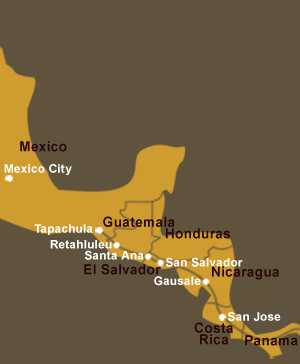

 San Salvador City, El Salvador : 2nd August 2003
San Salvador City, El Salvador : 2nd August 2003
 With all the blabbering from Tu Fein in our previous diary entry, I am sure you are all relieved that it is me, Mise, who has the privilege of sharing our TATA news with you again.
With all the blabbering from Tu Fein in our previous diary entry, I am sure you are all relieved that it is me, Mise, who has the privilege of sharing our TATA news with you again.
We are conquering Central America slowly but surely and I am happy to report that Miss M, Tu Fein and I are currently in El Salvador. Our entry into the smallest country in Central America turned out to be smooth and painless and we were all impressed with the speed and efficiency of the people involved at the border.
It was going to be a two-day ride to the city of San Miguel so from the border we covered about 30km and had to look for a place to stay that night. After a few rejections, we found a farm on the outskirts of a small town and the owner agreed that we could graze in his green fields and Miss M could pitch her tent. After Miss M got ready, she had a rinse down and then ventured out to look for something decent to eat. She found a small eatery about a mile up the road and great was her surprise when she saw they had shrimp on the menu – and for a very reasonable price of U$D3 too!! The owner and his friends tried to bestow complimentary beers on Miss M but she stood her ground and declined these, burying her face in a book in which she was writing some personal diaries. It took them a while however to get the hint… Miss M also nearly got the opportunity to try out her machete that evening whilst sleeping in her tent but we will leave this story for another day!
 When we entered San Miguel, we went straight for the offices of a company called DIANA, who manufacture and distribute all kinds of snacks throughout Central America, South America and even parts of the States too. Miss M knew of this contact through her friend Marco Alvarez, who is also associated with DIANA in Costa Rica. The people at the offices in San Miguel had been waiting for us for days and they were all very happy when we arrived. Miss M got a very warm welcome from Zoila, Jose Maria (the manager) and Mario and they treated her to a lovely meal with freshly squeezed juices which she just loved!
When we entered San Miguel, we went straight for the offices of a company called DIANA, who manufacture and distribute all kinds of snacks throughout Central America, South America and even parts of the States too. Miss M knew of this contact through her friend Marco Alvarez, who is also associated with DIANA in Costa Rica. The people at the offices in San Miguel had been waiting for us for days and they were all very happy when we arrived. Miss M got a very warm welcome from Zoila, Jose Maria (the manager) and Mario and they treated her to a lovely meal with freshly squeezed juices which she just loved!
From San Miguel we reckoned that it would have been about 4 days before we get to San Salvador City. Miss M decided that Tu Fein would go with nothing on his back as he had a few friction sores and she wanted these to heal first. The sun great for this! So, our bags were sent on with DIANA and Miss M only took the bare essentials with her. Everyday we realize with just how little one can get by……
 The road from San Miguel was quite hilly and it was up and down for quite a distance. The views were lovely though and, as we went slowly, we didn’t mind the mountain riding so much. We encountered a lot of road-workers and everywhere they were trying to improve the roads. One day, around noon we were approached by two men and they told us they were from a newspaper in San Salvador and would like to do an interview. We were delighted about the break and didn’t mind all the talking and questions at all!
The road from San Miguel was quite hilly and it was up and down for quite a distance. The views were lovely though and, as we went slowly, we didn’t mind the mountain riding so much. We encountered a lot of road-workers and everywhere they were trying to improve the roads. One day, around noon we were approached by two men and they told us they were from a newspaper in San Salvador and would like to do an interview. We were delighted about the break and didn’t mind all the talking and questions at all!
 It was not so easy to find a place that evening but a lovely woman crossed our way (just before darkness fell) and she agreed that we could spend the night at her house. We had a lovely feeding area with juicy grass and Ms M had a comfortable mattress where she shared a room with Christa and her three children. Miss M was told about the hardships this family had endured and how they were forced to seek employment in the United States (and leave the children behind) as the situation and job-opportunities were so difficult in El Salvador (and still are). These stories (also about the war that ended in 1992) were not told with self-pity but as a matter of fact. They were something that happened and was part of their lives and, despite what so many people in El Salvador had to endure, we noticed that there was always room for a smile and real friendliness.
It was not so easy to find a place that evening but a lovely woman crossed our way (just before darkness fell) and she agreed that we could spend the night at her house. We had a lovely feeding area with juicy grass and Ms M had a comfortable mattress where she shared a room with Christa and her three children. Miss M was told about the hardships this family had endured and how they were forced to seek employment in the United States (and leave the children behind) as the situation and job-opportunities were so difficult in El Salvador (and still are). These stories (also about the war that ended in 1992) were not told with self-pity but as a matter of fact. They were something that happened and was part of their lives and, despite what so many people in El Salvador had to endure, we noticed that there was always room for a smile and real friendliness.

 We were very lucky to have been invited by a couple called Eduardo and Leah Palomo for, when we arrived in San Salvador, Eduardo also arranged a place for us outside the city at a friend of his called Louis. Miss M was welcomed into the Palomo house with open arms and she had a real memorable and comfortable stay here. She and Leah went for water-aerobics a couple of times and Miss M claims that this had healed the kicked hip completely (she still walked with a limp on arrival in San Salvador but not anymore!). Leah also arranged a wine and snack get-together with some family and female friends at the
We were very lucky to have been invited by a couple called Eduardo and Leah Palomo for, when we arrived in San Salvador, Eduardo also arranged a place for us outside the city at a friend of his called Louis. Miss M was welcomed into the Palomo house with open arms and she had a real memorable and comfortable stay here. She and Leah went for water-aerobics a couple of times and Miss M claims that this had healed the kicked hip completely (she still walked with a limp on arrival in San Salvador but not anymore!). Leah also arranged a wine and snack get-together with some family and female friends at the  house one day and Miss M was really amazed at all the hospitality, generosity and enthusiasm for what we were doing. A couple of television Interviews followed and we had to be saddled up for these of course. Tu Fein put on his “Spaniel look” as he thought we were going but, as I am an old hand at this by now, I knew this getting ready was only for the Press and soon we would be in the comfort of our stables again!
house one day and Miss M was really amazed at all the hospitality, generosity and enthusiasm for what we were doing. A couple of television Interviews followed and we had to be saddled up for these of course. Tu Fein put on his “Spaniel look” as he thought we were going but, as I am an old hand at this by now, I knew this getting ready was only for the Press and soon we would be in the comfort of our stables again!
 Miss M was also invited for dinner to the house of Hugo Barrera, the general manager of DIANA and she was very glad that Eduardo and Leah came too as she was a bit apprehensive that her knowledge of Spanish might not see her through an entire night of conversation. One day, Mr Barrera picked Miss M up and took her to the factory of DIANA where they produce all the snacks. Well, any weight that Miss M had lost recently due to poor diet was made up for in about half an hour as she felt she just had to try every chip, every jellybean and every piece of toffee caramel! Miss M found Mr Barrera to be a very nice man and I am sure when the opportunity arises, she will tell more about him and also his experiences during the war.
Miss M was also invited for dinner to the house of Hugo Barrera, the general manager of DIANA and she was very glad that Eduardo and Leah came too as she was a bit apprehensive that her knowledge of Spanish might not see her through an entire night of conversation. One day, Mr Barrera picked Miss M up and took her to the factory of DIANA where they produce all the snacks. Well, any weight that Miss M had lost recently due to poor diet was made up for in about half an hour as she felt she just had to try every chip, every jellybean and every piece of toffee caramel! Miss M found Mr Barrera to be a very nice man and I am sure when the opportunity arises, she will tell more about him and also his experiences during the war.
 The invitations didn’t stop for Miss M and there was also a dinner with the Endurance Riders where Miss M was the Guest of Honour. She was even presented with a certificate, which basically stated that they were very impressed with our journey and what we have accomplished so far. Felipe, the President, also arranged to help Miss M
The invitations didn’t stop for Miss M and there was also a dinner with the Endurance Riders where Miss M was the Guest of Honour. She was even presented with a certificate, which basically stated that they were very impressed with our journey and what we have accomplished so far. Felipe, the President, also arranged to help Miss M  with good trails from San Salvador City to the border with Guatemala and were really delighted about this as it means a quieter route, more dirt road and in general a more interesting way to go.
with good trails from San Salvador City to the border with Guatemala and were really delighted about this as it means a quieter route, more dirt road and in general a more interesting way to go.
We have gained good weight whilst resting here in San Salvador for about ten days and both Tu Fein and I are looking forward to exploring yet more again. We will be in touch from Guatemala folks. Until then!